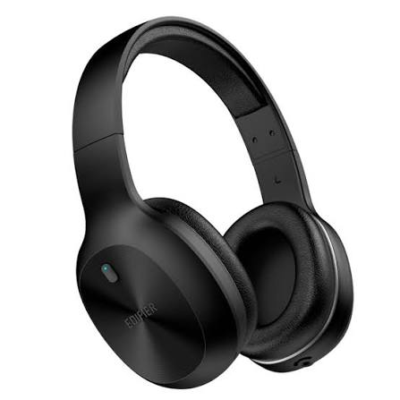
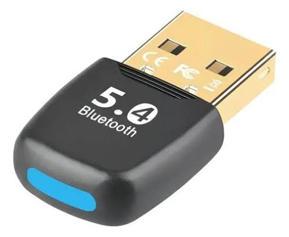

Qualidade do áudio Bluetooth: codecs, transmissão e equipamentos
Postado em: 21/11/2026 às 00:00
Como funciona o áudio Bluetooth?
O Bluetooth transmite áudio sem a necessidade de cabos, utilizando ondas eletromagnéticas na faixa
de 2,4 GHz.
Para transmitir uma música, o dispositivo de origem (celular ou computador) codifica e comprime o
áudio. Os dados são enviados ao fone ou caixa de som, que realiza a decodificação para reproduzir
o som.
Esse processo utiliza um codec, responsável por codificar e decodificar as informações sonoras.
A qualidade da transmissão depende principalmente de:
- Codec utilizado.
- Compatibilidade entre os dispositivos.
- Taxa de transmissão (bitrate).
- Estabilidade da conexão.
- Qualidade do equipamento de reprodução.
O perfil Bluetooth responsável pela transmissão convencional de áudio estéreo é o A2DP (Advanced
Audio Distribution Profile).
Comparação dos principais codecs
Os codecs determinam como o áudio será comprimido e transmitido. Cada tecnologia apresenta características próprias de qualidade, eficiência e compatibilidade.
| Codec | Taxa de transmissão | Característica |
| SBC | Variável | Padrão básico e amplamente compatível |
| AAC | Variável | Boa eficiência de compressão |
| aptX | Até 384 kbps | Boa qualidade e baixa complexidade |
| aptX HD | Até 576 kbps | Suporta áudio de até 24 bits/48 kHz |
| LDAC | 330, 660 ou 990 kbps | Transmissão em taxas elevadas |
| aptX Lossless | Até aproximadamente 1.200 kbps | Pode transmitir áudio de CD sem perdas |
| LC3 | Variável | Maior eficiência e menor consumo no Bluetooth LE Audio |
Principais diferenças:
- SBC: possui ampla compatibilidade, sendo o codec obrigatório para áudio A2DP.
- AAC: oferece boa compressão e é bastante utilizado em dispositivos Apple.
- aptX: desenvolvido pela Qualcomm, busca equilibrar qualidade e latência.
- aptX HD: permite maior resolução de áudio, mas ainda utiliza compressão com perdas.
- LDAC: desenvolvido pela Sony, permite taxas de transmissão mais elevadas, chegando a 990
kbps.
- aptX Lossless: pode transmitir áudio equivalente à qualidade de CD sem perdas, em condições
compatíveis.
- LC3: associado ao Bluetooth LE Audio, oferece boa qualidade com menor consumo de dados e
energia.
Interferências na transmissão
O Bluetooth utiliza a frequência de 2,4 GHz, compartilhada com equipamentos como roteadores
Wi-Fi.
Isso pode provocar:
- Interrupções na reprodução.
- Perda de pacotes.
- Instabilidade na conexão.
- Redução da taxa de transmissão.
Equipamentos recomendados

Fones Bluetooth
Priorizar modelos com suporte a LDAC, aptX Adaptive ou aptX Lossless, bons drivers e processamento de áudio.
Marcas: Sony, Sennheiser e JBL.
Transmissores Bluetooth USB
Permitem transmitir áudio de computadores e outros equipamentos. É necessário verificar os codecs suportados e a compatibilidade com o fone.

Caixas de som Bluetooth
Priorizar boa construção acústica, drivers de qualidade, estabilidade de conexão e suporte a codecs adequados.
Marcas: JBL, Sony e Edifier.Referências bibliográficas
Fontes utilizadas na elaboração dos nossos conteúdos.
Qualidade do áudio Bluetooth
-
ADRIANO, Bruno Tanaka; DIORIO, Gabriel Cristofoletti.
Transmissão de áudio sem fio em tempo real por Bluetooth utilizando o
ESP32.
UTFPR, 2021.
Acessar estudo -
BLUETOOTH SIG.
Performance Characterization of the Low Complexity Communication Codec
(LC3).
2023.
Acessar estudo -
TRAINOR, David.
Wireless Transmission of Audio Using Adaptive Lossless Coding.
Audio Engineering Society, 2009.
Acessar artigo -
AFANEH, Mohammad.
A Technical Overview of LC3.
Bluetooth SIG, 2020.
Acessar artigo